측량및지형공간정보산업기사 (2019-09-21 기출문제)
1과목: 응용측량
1. 축척에 대한 설명으로 옳은 것은?
- 축척 1:300의 도면상 면적은 실제 면적의 1/9000 이다.
- 축척 1:600와 도면을 축척 1:200으로 확대했을 때 도면의 크기는 3배가 된다.
- 축척 1:500의 도면상 면적은 실제 면적의 1/1000 이다.
- 축척 1:500와 도면을 축척 1:1000으로 확대했을 때 도면의 크기는 1/4가 된다.
(정답률: 68%)

2. 면적이 400m2인 정사각형 모양의 토지 면적을 0.4m2까지 구하기 위해 한 변의 길이는 최대 얼마까지 정확하게 관측하여야 하는가?
- 1mm
- 5mm
- 1cm
- 5cm
(정답률: 60%)
3. 반지름이 1200m인 원곡선으로 종단곡선을 설치할 때 접선시점으로부터 횡거 20m 지점의 종거는?
- 0.17m
- 1.45m
- 2.56m
- 3.14m
(정답률: 40%)
4. 도로 설계에서 클로소이드곡선의 매개변수(A)를 2배로 하면 동일한 곡선반지름에서 클로소이드곡선의 길이는 몇 배가 되는가?
- 2배
- 4배
- 6배
- 8배
(정답률: 81%)
5. 교점이 기점에서 450m의 위치에 있고 교각이 30°, 중심말뚝 간격이 20m일 때, 외할(E)이 5m라면 시단현의 길이는?
- 2.831m
- 4.918m
- 7.979m
- 9.319m
(정답률: 58%)
6. 어느 기간에서 관측 수위 중 그 수위보다 높은 수위와 낮은 수위의 관측 횟수가 같은 수위를 무엇이라 하는가?
- 평균수위
- 최대수위
- 평균저수위
- 평수위
(정답률: 70%)
7. 그림과 같은 지역을 점고법에 의해 구한 토량은?
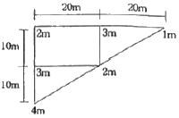
- 1000m3
- 1250m3
- 1500m3
- 2000m3
(정답률: 62%)
8. 터널 중심선측량의 가장 중요한 목적은?
- 터널 단면의 변위 관측
- 터널 입구의 정확한 크기 설정
- 입조점의 올바른 매설
- 정확한 방향과 거리측정
(정답률: 73%)
9. 지하시설물관측방법 중 지표면에서 지하로 고주파의 전자파를 방사하고 지하에서 반사되어 온 반사파를 수신하여 지하사설물의 위치를 판독하는 방법은?
- 전기관측법
- 지중레이더관측법
- 전자관측법
- 탄성파관측법
(정답률: 78%)
10. 그림과 같은 삼각형 ABC 토지의 한 변 AC상의 점 D와 BC상의 점 E를 연결하고 직선 DE에 의해 삼각형 ABC의 면적은 2등분 하고자 할 때 CE의 길이는? (단, AB=40m, AC=80m, BC=70m, AD=13m)
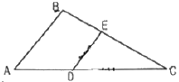
- 39.18m
- 41.79m
- 43.15m
- 45.18m
(정답률: 56%)
11. 경관평가요인 중 일반적으로 시설물의 전체 형상을 인식할 수 있고 경관의 주제로서 적당한 수평시각(θ)의 크기는?
- 0°≤θ≤10°
- 10°≤θ30°
- 30°＜θ≤60°
- 60°≤θ＜90°
(정답률: 68%)
12. 해양측량에서 해저수심, 간출암 높이 등의 기준은?
- 평균해수면
- 약최고고조면
- 약최저저조면
- 평수위면
(정답률: 45%)
13. 그림에 있어서 댐 저수면의 높이를 100m로 할 경우 그 저수량은 얼마인가? (단, 80m 바닥은 평평한 것으로 가정한다.)
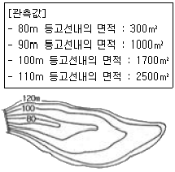
- 16000m3
- 20000m3
- 30000m3
- 34000m3
(정답률: 45%)
14. 다음 중 터널 곡선부의 곡선 측설법으로 가장 적합한 방법은?
- 좌표법
- 지거법
- 중앙종거법
- 편각법
(정답률: 44%)
15. 노선측량에서 종단면도에 표기하는 사항이 아닌 것은?
- 측점의 계획고
- 측점간 수평거리
- 측점의 계획단면적
- 측점의 지반고
(정답률: 60%)
16. 클로소이드에 대한 설명으로 옳지 않은 것은?
- 모든 클로소이드는 닮은꼴로 클로소이드의 형은 하나밖에 없지만 매개변수를 바꾸면 크기가 다른 많은 클로소이드를 만들 수 있다.
- 클로소이드의 요소에는 길이의 단위를 가진 것과 단위가 없는 것이 있다.
- 클로소이드는 나선의 일종으로 곡률이 곡선의 길이에 비례한다.
- 클로소이드에 있어서 접선각*τ)을 라디안으로 표시하면 곡선길이(L)와 반지름(R) 사이에는 τ=L/3R인 관계가 있다.
(정답률: 65%)
17. 그림과 같이
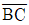
에 직각으로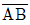
=96m로 A점을 정하고 육분의(sextant)배의 위치 ∠APB를 관측하여 52°15‘을 얻었을 때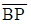
의 거리는?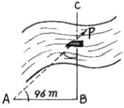
- 93.85m
- 83.85m
- 74.33m
- 64.33m
(정답률: 59%)
18. 그림과 같은 사각형 ABCD의 면적은?
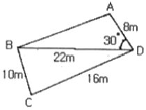
- 95.2m2
- 1⑤.2m2
- 111.2m2
- 117.3m2
(정답률: 55%)
19. 수심이 h인 하천의 평균유속을 구하기 위해 각 깊이별 유속을 관측한 결과가 표와 같을 때, 3점법에 의한 평균유속은?
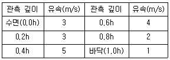
- 3.25m/s
- 3.67m/s
- 3.75m/s
- 4.00m/s
(정답률: 66%)
20. 교점(I,P)이 도로기점으로부터 300m 떨어진 지점에 위치하고 곡선반지름 R=200m, 교각 I=90°인 원곡선을 편각법으로 측설할 때, 종점도(E.C)의 위치는? (단, 중심말뚝의 간격은 20m이다.)
- No.20+14.159m
- No.21+14.159m
- No.22+14.159m
- No.23+14.159m
(정답률: 57%)
2과목: 사진측량 및 원격탐사
21. 초점거리가 f이고, 사진의 크기가 a×a인 카메라로 촬영한 항공사진이 촬영 시 경사도가 α이었다면 사진에서 주점으로부터 연직점까지의 거리는?
- aㆍtanα
- aㆍtanα/2
- fㆍtanα
- fㆍtanα/2
(정답률: 65%)
22. 지구자원탐사 목적이 LANDSAT(1~7호) 위성에 탑재디었던 원격탐사 센서가 아닌 것은?
- LANDSAT TM(Thematic Mapper)
- LANDSAT MSS(Multi Spectral Scanner)
- LANDSAT HRV(High Resolution Visible)
- LANDSAT ETM+(Enhanced Thematic Mapper plus)
(정답률: 60%)
23. SAR(Synthetic Aperture Radar)의 왜곡 중에서 레이더 방향으로 기울어진 면이 영상에 짧게 나타나게 되는 왜곡 현상은?
- 음영(shadow)
- 전도(layover)
- 단축(foreshortening)
- 스페클잡음(speckle noise)
(정답률: 65%)
24. 한 쌍의 항공사진을 입체시 하는 경우 나타나는 지면의 기복에 대한 설명으로 옳은 것은?
- 실제보다 높이 차가 커 보인다.
- 실제보다 높이 차가 작아 보인다.
- 실제와 같다.
- 고저를 분별하기 힘들다.
(정답률: 68%)
25. 수치미분편위수정에 의하여 정사영상을 제작하고자 할 때 필요한 자료가 아닌 것은?
- 수치표고모델
- 디지털 항공영상
- 촬영시 사진기의 위치 및 자세정보
- 영상정합 정보
(정답률: 31%)
26. 회전준기가 일정한 위성을 이용한 원격탐사의 특성이 아닌 것은?
- 단시간 내에 넓은 지역을 동시에 측정할 수 있으며 반복측정이 가능하다.
- 관측이 좁은 시야각으로 행해지므로 얻어진 영상은 정사투영에 가깝다.
- 탐사된 자료가 즉시 이용될 수 있으며 환경문제 해결 등에 유용하다.
- 언제나 원하는 지점을 원하는 시기에 관측할 수 있다.
(정답률: 73%)
27. 원격탐사를 위한 센서를 탑재한 탑재체(platform)가 아닌 것은?
- IKONOS
- LANDSAT
- SPOT
- VLBI
(정답률: 70%)
28. 항공사진의 축척(scale)에 대한 설명으로 옳은 것은?
- 카메라의 초점거리에 비례하고, 비행고도에 반비례한다.
- 카메라의 초점거리에 반비례하고, 비행고도에 비례한다.
- 카메라의 초점거리와 비행고도에 반비례한다.
- 카메라의 초점거리와 비행고도에 비례한다.
(정답률: 62%)
29. 촬영고도 3000m에서 초점거리 150mm의 카메라로 촬영한 밀착사진의 종중복도가 60%, 횡중복도가 30%일 때 이 연직사진의 유효모델 1개 포함되는 실제 면적은? (단, 사진크기=18cm×18cm)
- 3.52km2
- 3.63km2
- 3.78km2
- 3.81km2
(정답률: 52%)
30. 초점거리가 150mm인 카메라로 표고 300m의 평탄한 지역을 사진축척 1:15000으로 촬영한 사진의 촬영고도(절대촬영고도)는?
- 2250m
- 2550m
- 2850m
- 3000m
(정답률: 56%)
31. 축척 1:5000으로 평지를 촬영한 연직사진이 있다. 사진크기 23cm×23cm, 종중복도가 60%라면 촬영기선 길이는?
- 690m
- 460m
- 920m
- 1380m
(정답률: 59%)
32. 사진크기와 촬영고도가 같을 때 초광각 카메라(초점거리 88mm, 피사각 120°)에 의한 촬영면적은 광각카메라(초점거리 152mm, 피사각 90°)에 의한 촬영면적의 약 몇 배가 되는가?
- 1.5배
- 1.7배
- 3.0배
- 3.4배
(정답률: 44%)
33. 항공사진측량용 디지털 카메라 중 선형배열 카메라(Linear Array Camera)에 대한 설명으로 틀린 것은?
- 선형의 CCD 소자를 이용하여 지면을 스캐닝 하는 방식이다.
- 각각의 라인별로 중심투영의 특성을 가진다.
- 각각의 라인별로 서로 다른 외부표정요소를 가진다.
- 촬영방식은 기존의 아날로그 카메라와 동일하게 대상지역을 격자형태로 촬영한다.
(정답률: 62%)
34. 지상좌표계로 좌표가 (50m, 50m)인 건물의 모서리가 사진 상의(11mm, 11mm) 위치에 나타났다. 사진 상의 주점 위치(1mm, 1mm)이고, 투영중심은 (0m, 0m, 1530m)이라면 사진 축척은? (단, 사진좌표계와 지상좌표계와 모든 좌표축의 방향은 일치한다.)
- 1:1000
- 1:2000
- 1:5000
- 1:10000
(정답률: 52%)
35. 수치지도로부터 수치지형모델(DTM)을 생성하기 위하여 필요한 레이어는?
- 건물 레이어
- 하천 레이어
- 도로 레이어
- 등고선 레이어
(정답률: 76%)
36. 절대표정에 대한 설명으로 틀린 것은?
- 절대표정을 수행하면 Tie Point에 대한 지상점 좌표를 계산할 수 있다.
- 상포표정으로 생성된 3차원 모델과 지상좌표계의 기하학적 관계를 수립한다.
- 주점의 위치와 초점거리, 축척을 결정하는 과정이다.
- 7개의 독립적인 지상좌표값이 명시된 지상기준점이 필요하다.
(정답률: 41%)
37. 지상기준점과 사진좌표를 이용하여 외부표정 요소를 계산하기 위해 필요한 식은?
- 공선조건식
- Similarity 변환식
- Affine 변환식
- 투영변환식
(정답률: 59%)
38. 원격탐사 디지털 영상 자료 포맷 중 데이터셋 안의 각각의 화소와 관련된 n개 밴드의 밝기 값을 순차적으로 정렬하는 포맷은?
- BIL
- BIP
- BIT
- BSQ
(정답률: 46%)
39. 항공라이다의 활용분야로 가장 거리가 먼 것은?
- 지하매설물의 탐지
- 빙하 및 사막의 DEM 생성
- 수목의 높이 측정
- 송전선의 3차원 위치 측정
(정답률: 73%)
40. 복수의 입체모델에 대해 입체모델 각각에 상호표정을 행한 뒤에 접합점 및 기준점을 이용하여 각 입체모델의 절대표정을 수행하는 항공삼각측량의 조정방법은?
- 독립모델법
- 광속조정법
- 다항식조정법
- 에어로 폴리건법
(정답률: 56%)
3과목: GIS 및 GPS
41. 공간정보를 크게 두 가지 정보로 구분할 때, 다음 중 그 분류로 가장 적합한 것은?
- 위치정보(positional information)와 속성정보(attribute information)
- 객체정보(object information)와 형상정보(entity information)
- 위치정보(positional information)와 형상정보(entity information)
- 객체정보(object information)와 속성정보(attribute information)
(정답률: 73%)
42. 다음 중 수치표고자료의 유형이 아닌 것은?
- DEM
- DIME
- DTEM
- TIN
(정답률: 58%)
43. 주어진 연속지적도에서 본인 소유의 필지와 접해있는 이웃 필지의 소유주를 알고 싶을 때에 필지간의 위상관계 중에 어느 관계를 이용하는가?
- 포함성
- 일치성
- 인접성
- 연결성
(정답률: 78%)
44. 벡터(vector)자료 구조의 특징으로 옳지 않은 것은?
- 현실 세계의 정확한 묘사가 가능하다.
- 비교적 자료구조가 간단하다.
- 압축된 데이터구조로 자료의 용량을 축소할 수 있다.
- 위상관계의 지공으로 공간적 분석이 용이하다.
(정답률: 72%)
45. 주어진 Sido 테이블에 대해 아래와 같은 SQL 문에 의해 얻어지는 결과는?
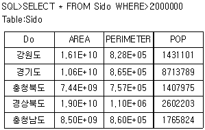
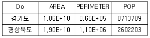
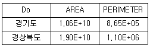
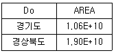
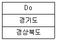
(정답률: 70%)
46. GNSS 측량방법 중 이동국 관측점에서 위성신호를 처리한 성과와 기지국에서 송신된 위치자료를 수신하여 이동지점의 위치좌표를 바로 구할 수 있는 측량방법은?
- 정지식 측위방법
- 후처리 측위방법
- 역정밀 측위방법
- 실시간 이동식 측위방법
(정답률: 80%)
47. GNSS 측량의 체계구성을 크게 3가지로 나눌 때 해당되지 않는 것은?
- 사용자부분
- 우주부분
- 제어부분
- 신호부분
(정답률: 58%)
48. 공간 데이터의 메타데이터에 포함되는 주요 정보가 아닌 것은?
- 공간 참조정보
- 데이터품질정보
- 배포정보
- 가격변동정보
(정답률: 76%)
49. 래스터 정보의 압축방법이 아닌 것은?
- Chain Code
- C/A Code
- Run-Length Code
- Block Code
(정답률: 65%)
50. GNSS 측량에 의해 어떤 지점의 타원체고 150.00m를 얻었다. 이 지점의 지오이드고가 20.00m라면 정표고는?
- 170.00m
- 140.00m
- 130.00m
- 120.00m
(정답률: 73%)
51. GNSS 측위 기법 중에서 가창 정확도가 높은 방법은?
- kinemati 측위
- VRS 측위
- static 측위
- RTK 측위
(정답률: 53%)
52. 자료의 수집 및 취득시 지리정보시스템(GIS)을 이용함으로써 기대할 수 있는 효과에 대한 설명으로 거리가 먼 것은?
- 투자 및 조사의 중복을 최소화할 수 있다.
- 분업과 합작을 통하여 자료의 수치화 작업을 용이하게 해준다.
- 상호 간의 자료 공유와 유통이 제한적이므로 보안성이 향상된다.
- 자료기반(database)과 전상망 체계를 통하여 자료를 더욱 간편하게 사용하게 한다.
(정답률: 76%)
53. 한 화소에 8bit를 할당하면 몇 가지를 서로 다른 값으로 표현할 수 있는가?
- 2
- 8
- 64
- 256
(정답률: 76%)
54. 데이터 정규화(normalization)에 대한 설명으로 옳은 것은?
- 데이터를 일정한 규칙이나 기준에 의해 중복을 최소화할 수 있도록 구조화하는 것이다.
- 공간데이터를 구분하거나 특성을 설명할 목적으로 속성값을 이용하여 화면에 표시하는 것이다.
- 지리적인 좌표에 도로명 또는 우편번호와 같은 고유번호를 부여하는 것이다.
- 공통이 되는 속성값을 기준으로 서로 구분되어 있는 사상(feature)을 단순화하는 것이다.
(정답률: 56%)
55. 지리정보시스템(GIS( 소프트웨어가 갖는 CAD와의 가장 큰 차이점은?
- 대용량의 그래픽 정보를 다룬다.
- 위상구조를 바탕으로 공간분석 능력을 갖추었다.
- 특정 정보만을 선택하여 추출할 수 있다.
- 다양한 축척으로 자료를 출력할 수 있다.
(정답률: 67%)
56. 다음 중 디지타이징 입력에 따른 수치지도의 오류(일반적인 위상 에러) 유형이 아닌 것은?
- Sliver polygon
- Under-Shoot
- Spike
- Margin
(정답률: 60%)
57. 현실세계를 지리정보시스템(GIS) 자료형태로 표현하기 위하여 지리정보에 대한 점보구조, 표현, 논리적 구조, 제약조건 및 상호관계 등을 정의한 것을 무엇이라고 하는가?
- 데이터모델
- 위상설정
- 데이터생산사양
- 메타데이터
(정답률: 39%)
58. 수치표고모델(DEM)의 응용분야와 가장 거리가 먼 것은?
- 아파트 단지별 세입자 비율 조사
- 가시권 분석
- 수자원 정보체계 구축
- 절토량 및 성토량 계산
(정답률: 67%)
59. 다음의 도형 정보 중 차원이 다른 것은?
- 도로와 중심선
- 소방차의 출동 경로
- 절대 표고를 표시한 점
- 분수선과 계곡선
(정답률: 59%)
60. 오픈 소스 소프트웨어(open source software)에 대한 설명으로 옳지 않은 것은?
- 일반 사용자에 의해 소스코드의 수정과 재배포가 가능하다.
- 전문 프로그래머가 아닌 일반 사용자도 개발에 참여할 수 있다.
- 사용자 인터페이스가 상업용 소프트웨어에 비해 우수한 것이 특징이다.
- 소스코드가 제공됨으로써 자료처리 과정을 명확하게 이해할 수 있는 장점이 있다.
(정답률: 71%)
4과목: 측량학
61. 기포관의 감도의 표시방법으로 옳은 것은?
- 기포관 길이에 대한 곡률중심의 사이각
- 기포관 전체 눈금에 대한 곡률중심의 사이각
- 기포관 한 눈금에 대한 곡률중심의 사이각
- 기포관 1/2 눈금에 대한 곡률중심의 사이각
(정답률: 63%)
62. 그림에서
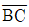
측선의 방위각은? (단,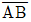
측선의 방위각은 260° 13‘ 12“이다.)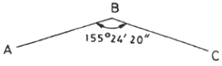
- 55°37‘32“
- 104°48‘52“
- 235°48‘52“
- 284°48‘52“
(정답률: 42%)
63. 50m의 줄자로 거리를 측정할 때 ±3.0mm의 부정오차가 생긴다면 이 줄자로 150m를 관측할 때 생기는 부정오차는?
- ±1.0mm
- ±1.7mm
- ±3.0mm
- ±5.2mm
(정답률: 62%)
64. 축척 1:500 지형도를 이용하여 같은 크기의 1:5000 지형도를 제작하려고 한다. 1:5000 지형도 제작을 위해 필요한 1:500 지형도의 매수는?
- 10매
- 50매
- 100매
- 200매
(정답률: 66%)
65. 각 관측 시 최소제곱법으로 최확값을 구하는 목적은?
- 잔차를 얻기 위해서
- 기계오차를 없애기 위해서
- 우연오차를 무리없이 배분하기 위해서
- 착오에 의한 오차를 제거하기 위해서
(정답률: 67%)
66. 지형도의 활용과 가장 거리가 먼 것은?
- 저수지의 담수 면적과 저수량의 계산
- 절토 및 성토 범위의 결정
- 노선의 도상 선정
- 지적경계측량
(정답률: 52%)
67. 토털스테이션의 구성요소와 관계가 없는 것은?
- 광파기
- 앨리데이드
- 디지털 데오드라이트
- 마이크로 프로세서(컴퓨터)
(정답률: 60%)
68. 삼각점에 대한 성과표에 기재되어야 할 내용이 아닌 것은?
- 경위도
- 점번호
- 직각좌표
- 표고 및 거리의 대수
(정답률: 61%)
69. 지구의 곡률에 의한 정밀도를 1/10000까지 허용할 때 평면으로 볼 수 있는 거리를 구하는 식으로 옳은 것은? (단, 지구곡률반지름=6370km)
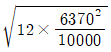
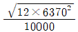
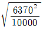
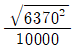
(정답률: 55%)
70. 그림과 같은 △ABC에서 ∠A=22°00'56", ∠C=80°21'54", b=310.95m라면 변 a의 길이는?
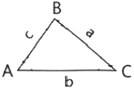
- 118.32m
- 119.34m
- 310.95m
- 313.86m
(정답률: 64%)
71. 그림과 같은 효로수준측량의 결과가 다음과 같을 때 B점의 표고는? (단, A점의 표고는 100m이다.)
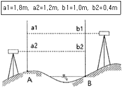
- 100.4m
- 100.8m
- 101.2m
- 101.6m
(정답률: 65%)
72. 150cm 표척의 최상단이 연직선에서 앞으로 10cm 기울어져 있을 때 표척의 레벨관측값이 1.2m 였다면 표척이 기울어져 발생한 오차를 보정한 관측값은?
- 119.73cm
- 119.93cm
- 149.47cm
- 149.79cm
(정답률: 32%)
73. UTM 좌표에 관한 설명으로 옳은 것은?
- 각 구역을 경도는 8°, 위도는 6°로 나누어 투영한다.
- 축척계수는 0.9996A로 전 지역에서 일정하다.
- 북위 85°부터 남위 85°까지 투영범위를 갖는다.
- 우리나라는 51S~52S 구역에 위치하고 있다.
(정답률: 61%)
74. 그림과 같은 트래버스에서 AL의 방위각이 19°48‘26“, BM의 방위각이 310°36’43”, 내각의 총합이 1190°47‘22“일 때 축각 오차는?
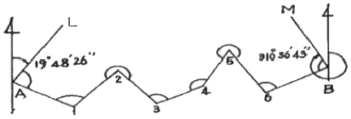
- -55“
- -25“
- +25“
- +45“
(정답률: 48%)
75. 지리학적 경위도, 직각좌표, 지구중심 직교좌표, 높이 및 중력 측정의 기준으로 사용하기 위하여 위성기준점, 수준점 및 중력점을 기초로 정한 기준점은?
- 통합기준점
- 경위도원점
- 지자기점
- 삼각점
(정답률: 72%)
76. 지도 등을 간행하여 판매하거나 배포할 수 없는 자에 해당하지 않는 것은?
- 피상년후견인
- 피한정후견인
- 관련 규정을 위반하여 금고 이상의 실형을 선고 받고 그 집행이 끝나거나 집행이 면제된 날부터 2년이 지나지 아니한 자
- 관련 규정을 위반하여 금고 이상의 형의 집행유예를 선고받고 그 집행유예기간이 끝난 날부터 2년이 지나지 아니한 자
(정답률: 57%)
77. 측량기술자의 업무정지 사유에 해당되지 않는 것은?
- 근무처 등의 신고를 거짓으로 한 경우
- 다른 사람에게 측량기술경력증을 빌려준 경우
- 경력 등의 변경신고를 거짓으로 한 경우
- 측량기술자가 자격증을 분실한 경우
(정답률: 76%)
78. 공공측량 작업계획서에 포함되어야 할 사항이 아닌 것은?
- 공공측량의 사업명
- 공공측량의 작업기간
- 공공측량의 용역 수행자
- 공공측량의 목적 및 활용 범위
(정답률: 67%)
79. 공간정보의 구축 및 관리 등에 관한 법률에 의한 벌칙으로 2년 이하의 징역 또는 2천만원 이하의 벌금에 해당되지 않는 것은?
- 측량업자나 수로사업자로서 속임수, 위력, 그 밖의 방법으로 측량업 또는 수로사업과 관련된 입찰과 공정성을 해친 자
- 성능검사대행자의 등록을 하지 아니하거나 거짓이나 그 밖의 부정한 방법으로 성능검사대행자의 등록을 하고 성능검사업무를 한 자
- 고의로 측량성과 또는 수로조사성과를 사실과 다르게 한 자
- 성능검사를 부정하게 한 성능검사대행자
(정답률: 56%)
80. 공간정보의 구축 및 관리 등에 관한 법률에 따라 아래와 같이 정의되는 것은?
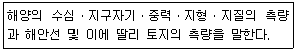
- 해양측량
- 수로측량
- 해안측량
- 수자원측량
(정답률: 63%)